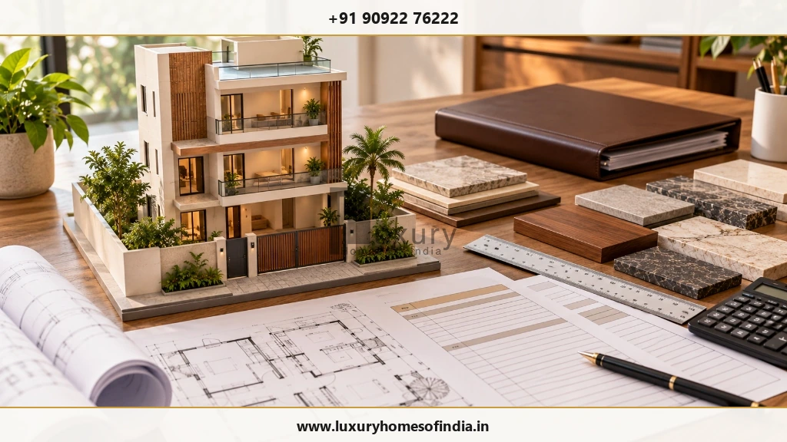
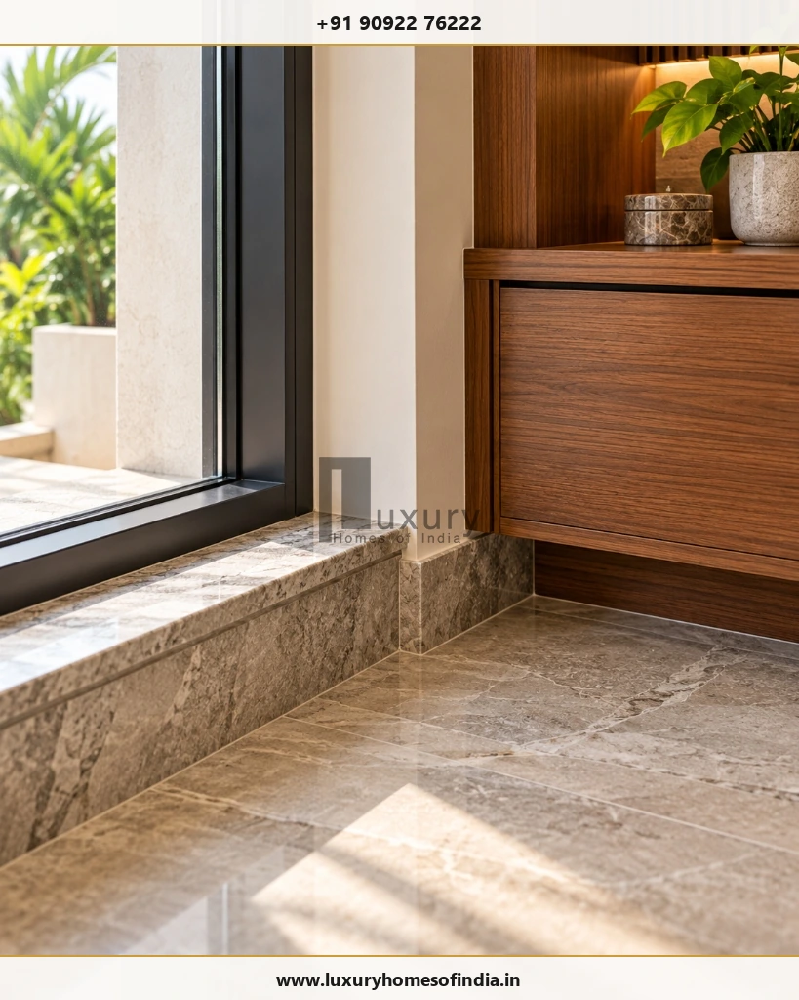
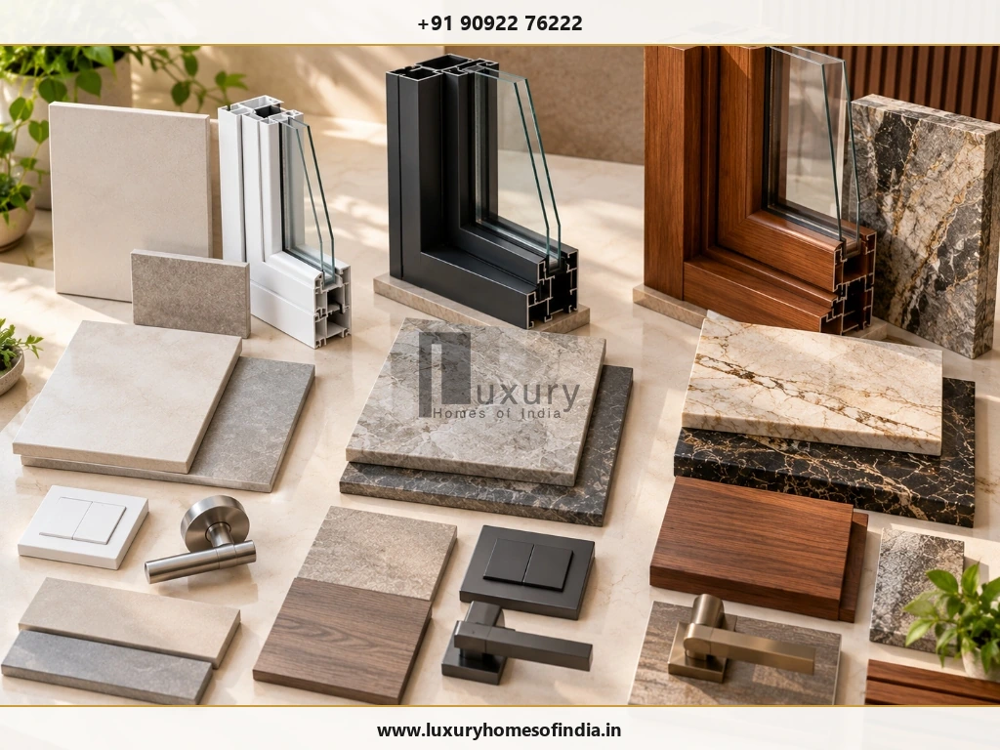

Executive Summary for Homeowners
Planning a G+2 house in Chennai starts with three essentials: total built-up area, construction specifications and the scope covered by the quotation. A G+2 house has a ground floor and two upper floors, so a home with 1,000 sq ft on each floor has 3,000 sq ft of total built-up area. The construction estimate is calculated by multiplying the applicable rate per square foot by that area. For preliminary planning, this guide uses illustrative standard, premium and luxury rate scenarios, but these are not verified LHI prices or guaranteed market rates. The final cost depends on the structural design, soil conditions, materials, labour, finishing, approvals and external works. Before committing to a budget, compare itemised quotations on the same specifications and identify what is excluded. This approach helps you distinguish the core building cost from the wider investment required to complete a G+2 residence.

1. What does G+2 mean in house construction?
G+2 refers to a ground floor plus two upper floors, giving the building three floors in total.
- Ground floor: The building's ground-level floor (often accommodating parking, foyer, living areas, or guest suites).
- First floor: The first level above the ground floor (typically primary family living, dining, kitchen, and master bedrooms).
- Second floor: The second level above the ground floor (bedrooms, study, lounge, entertainment, or private terraces).
For example, if each floor has 1,000 sq ft of built-up area:
The plot area is not necessarily the same as the built-up area. Setbacks, permitted coverage, planning regulations, building height and site constraints affect the area that can be developed.
Before estimating construction costs, confirm the proposed footprint, permissible built-up area and floor configuration for the particular plot. For regulatory guidance on building limits in Chennai, explore LHI's comprehensive guide to G+2 houses on small plots in Chennai: rules and FSI.
2. Cost to build a G+2 house in Chennai in 2026
The following table illustrates how the budget changes with the total built-up area and assumed rate.
Important pricing note: The rates below are inherited from the supplied draft. Their current market accuracy and scope inclusions have not been independently verified for this publication. Treat them as provisional modelling inputs, not as approved LHI prices.
| Total built-up area | Standard scenario ₹2,400–₹2,900/sq ft |
Premium scenario ₹2,900–₹3,800/sq ft |
Illustrative luxury scenario ₹3,800–₹5,600/sq ft |
|---|---|---|---|
| 2,400 sq ft (e.g., 800 sq ft × 3 floors) |
₹57.6–69.6 lakh | ₹69.6–91.2 lakh | ₹91.2 lakh–₹1.344 crore |
| 3,000 sq ft (e.g., 1,000 sq ft × 3 floors) |
₹72–87 lakh | ₹87 lakh–₹1.14 crore | ₹1.14–1.68 crore |
| 3,600 sq ft (e.g., 1,200 sq ft × 3 floors) |
₹86.4 lakh–₹1.044 crore | ₹1.044–1.368 crore | ₹1.368–2.016 crore |
| 4,500 sq ft (e.g., 1,500 sq ft × 3 floors) |
₹1.08–1.305 crore | ₹1.305–1.71 crore | ₹1.71–2.52 crore |
These figures are calculated estimates, not contractor quotations. The standard and premium ranges, as well as the illustrative luxury range, must be validated against dated market evidence before publication as current Chennai guidance.
The categories also overlap at their boundaries. They are budget scenarios rather than universal definitions of construction quality.

How to calculate your construction estimate
Use this basic formula:
For a hypothetical 3,000 sq ft house:
- At ₹2,400/sq ft: ₹72 lakh.
- At ₹2,900/sq ft: ₹87 lakh.
- At ₹3,800/sq ft: ₹1.14 crore.
- At ₹5,600/sq ft: ₹1.68 crore.
These are arithmetic calculations using the provisional rates shown above. They do not establish that a contractor will provide the same scope at those prices.
Before using the estimate for financial planning, check whether the rate includes the structure, masonry, electrical and plumbing work, waterproofing, flooring, doors, windows, painting and other agreed finishing items.
3. What determines the construction cost of a G+2 house?
Two houses with the same built-up area can have different budgets because their site conditions, design requirements and specifications differ.
Soil conditions and foundation design
The foundation must be designed for the building's loads and actual site conditions. Soil characteristics, groundwater and neighbouring structures can influence foundation requirements.
A qualified structural engineer should determine the appropriate design using the relevant site information. Do not choose foundation dimensions from a generic online rate guide.
Structural design and architectural complexity
The column and beam arrangement, spans, balconies, staircase, double-height spaces and roof-terrace features can affect the quantity and complexity of construction work.
Coordinate architectural requirements with structural design before finalising the budget.
Materials and workmanship
Concrete, reinforcement steel, masonry, waterproofing, flooring, doors, windows, electrical components and plumbing fittings all contribute to the overall cost.
A useful quotation specifies materials, product grades, installation scope and any allowances instead of relying only on descriptions such as “premium quality.”

Labour and site access
Material transport, site storage, working access, labour availability and construction logistics can affect the cost of executing the project.
The exact location and conditions of the plot should therefore be considered when comparing estimates.
Interior finishes and building systems
Kitchens, wardrobes, custom joinery, decorative lighting, false ceilings, air-conditioning and home automation may be included, partially included or excluded from a construction quotation.
Request a separate breakdown for these items so that a lower headline rate does not conceal a difference in scope.
4. Additional expenses beyond core construction
The core construction estimate should not automatically be treated as the complete cost of moving into a finished home.
| Item | What to verify |
|---|---|
| Architectural and structural design | Consultant fees and drawings |
| Soil investigation | Testing and reporting |
| Approvals and statutory charges | Applicable authority, documents and fees |
| Compound wall and gate | Dimensions, materials and finishes |
| Sump, overhead tank and pumps | Capacity, construction and equipment |
| Borewell or water connection | Feasibility and installation |
| Electrical connection | Metering and applicable charges |
| Interior works | Kitchen, wardrobes, furniture and lighting |
| External development | Paving, drainage and landscaping |
| Solar or automation systems | Equipment, wiring and commissioning |
| Taxes and professional fees | Items included in the quotation |
| Contingency | Allowance for unforeseen conditions and approved changes |
Not every project requires every item. Some may already be included in the contractor's price, while others may be supplied by separate consultants or vendors.
For that reason, avoid applying a generic additional-cost allowance without checking the actual scope.
For related planning advice, read LHI's comprehensive guide on hidden costs in house construction in Chennai.
5. How much does each floor cost?
Dividing the total estimated cost by three gives a useful arithmetic average, but it does not represent the exact construction cost of each floor.
The ground floor may involve foundation and plinth work. Upper floors may involve additional slabs, masonry, services and finishing. Shared structural elements, staircases and common services may not be allocated evenly between floors.
Example: A hypothetical ₹90 lakh budget for a 3,000 sq ft house averages ₹30 lakh per 1,000 sq ft. That is a mathematical average—not a detailed floor-wise estimate.
Ask the contractor to explain how the quotation measures and allocates foundation work, structural elements, stairs, common services and finishes.
6. Standard, premium and luxury construction: what is the difference?
The terms describe broad specification levels, not fixed industry-wide packages.

| Feature | Standard | Premium | Luxury |
|---|---|---|---|
| Architecture | Practical layout | More customised detailing | Bespoke design where specified |
| Flooring | Standard specified finishes | Upgraded tiles or selected stone | Premium or specialist finishes |
| Doors and windows | Specified standard products | Upgraded profiles and hardware | Custom or high-performance systems where included |
| Bathrooms | Standard fittings | Upgraded fittings and finishes | Premium fittings and coordinated detailing |
| Lighting | Functional lighting | Layered lighting design | Bespoke lighting and controls where included |
| Interiors | Limited or separately priced | More extensive joinery | Custom joinery and specialist materials |
| Building systems | Standard provisions | Upgrades according to specification | Advanced systems where expressly included |
A luxury construction label does not automatically include furniture, appliances, every interior finish, automation or air-conditioning.
The specification schedule and itemised quotation are more meaningful than the category name alone.
7. How to manage costs without compromising safety
A practical budget focuses on reducing waste, rework and unclear scope—not on cutting essential safety or quality requirements.
Finalise the layout early
Late design changes can lead to rework and material waste.
Coordinate structural & architectural drawings
Resolve design requirements before construction decisions become expensive to change.
Compare equivalent quotations
Ask every shortlisted contractor to price the same drawings and specifications.
Choose finishes deliberately
Prioritise the areas that matter most to your household.
Coordinate building services
Plan electrical, plumbing, air-conditioning and drainage routes before finishes are installed.
Confirm material substitutions in writing
Check cost, specification and suitability before approving changes.
Record variations
Obtain written agreement on the cost and schedule implications of changes.
Inspect work at appropriate milestones
Arrange qualified inspections and required testing before affected work is covered.
For actionable strategies on value engineering without cutting corners, see LHI's comprehensive guide on how to reduce house construction cost in Chennai without compromising quality.
8. What should a G+2 construction quotation include?
A detailed quotation should make it possible to understand what you are paying for and what remains outside the contract.
Check for:
- Total built-up area and its measurement method.
- Architectural and structural scope.
- Foundation assumptions and site conditions.
- Concrete, reinforcement and masonry specifications.
- Electrical and plumbing installations.
- Waterproofing work and specified tests.
- Flooring, doors, windows and painting.
- Staircase, terrace and roof treatments.
- Water storage, compound wall and external works.
- Interior items included and excluded.
- Applicable taxes and professional fees.
- Payment milestones and variation procedures.
- Project-specific schedule and dependencies.
- Quality inspections, handover documents and defect rectification.
When quotations differ, compare the individual items rather than selecting the lowest headline rate.
9. How long does a G+2 house take to build?
The construction schedule depends on the design, total area, site conditions, approvals, material availability, construction method and finish level.
A project-specific schedule should identify the major stages:
- Site investigation and planning.
- Architectural and structural design.
- Required approvals.
- Site preparation and foundation.
- Structural framework.
- Masonry and building services.
- Waterproofing and finishes.
- Interior and external works.
- Testing, snagging and handover.
The duration should be agreed against the actual scope and project dependencies rather than inferred from the number of floors alone.
See the step-by-step house construction process: from plot to handover for a full phase-by-phase timeline guide.
Frequently Asked Questions
What is the cost to build a G+2 house in Chennai in 2026?
The cost depends on total built-up area, site conditions, specifications and the contractor's inclusions. Using this article's provisional rate scenarios, a 3,000 sq ft house calculates to ₹72–87 lakh at ₹2,400–₹2,900/sq ft, ₹87 lakh–₹1.14 crore at ₹2,900–₹3,800/sq ft, or ₹1.14–₹1.68 crore at ₹3,800–₹5,600/sq ft. These are unverified planning calculations, not current LHI prices.
Does G+2 mean two floors or three floors?
G+2 means a ground floor plus two upper floors, making three floors in total.
How much does a 1,000 sq ft G+2 house cost?
If 1,000 sq ft is the built-up area of each floor, the total is 3,000 sq ft. Multiply that area by the applicable rate for an initial estimate. If 1,000 sq ft refers to the total area across all floors, the calculation is different.
Is construction cost based on plot area or built-up area?
Construction quotations commonly use an agreed built-up-area measurement, but the exact method should be confirmed in the contract. Plot area, footprint and total built-up area are not interchangeable.
Are interiors included in the construction rate?
Not necessarily. Kitchens, wardrobes, loose furniture, appliances, decorative lighting and automation may be excluded or separately priced. Obtain a written inclusion and exclusion list.
Does every G+2 house need a stronger foundation?
The foundation must be designed for the actual loads and site conditions. The number of floors alone does not establish a universal foundation design.
How can I get a more accurate construction estimate?
Provide the plot details, proposed floor plans, built-up area, structural requirements and desired specifications. Request an itemised BOQ or detailed quotation, then check the inclusions, exclusions, taxes and additional site costs.
Does a general online estimate represent an LHI quotation?
No. An online planning estimate is not a binding Luxury Homes of India quotation. Any project price must be confirmed against the current approved quotation, drawings, specifications, site conditions and agreed scope.
Plan your G+2 construction budget carefully
The cost of a G+2 house in Chennai depends on more than the number of floors. Built-up area, foundation design, structural requirements, materials, finishes and additional site works all affect the overall investment.
Begin with a clearly defined area and specification level. Use a transparent calculation for the core construction estimate, then prepare a separate budget for approvals, interiors, utilities and external works. Finally, compare itemised contractor quotations on the same scope.
A well-defined scope and coordinated drawings make it easier to evaluate costs and manage changes throughout the project.
Discuss your residential construction requirements
Luxury Homes of India can be contacted to discuss a potential residential construction project and the scope required for a project-specific estimate.
Prepare your plot dimensions, proposed built-up area, number of floors, preferred finish level and site location before requesting a quotation.
Disclaimer: The rates and calculations in this guide are provisional planning inputs derived from the supplied draft. They have not been independently validated as current market rates or approved LHI prices. Actual costs depend on design, site conditions, specifications, contractor scope, applicable requirements and market conditions. Some professional, approval, interior and external-work expenses may be excluded. Obtain a project-specific quotation before making financial decisions.
Written by: Luxury Homes of India Editorial | Reviewed by: LHI In-House Technical Team